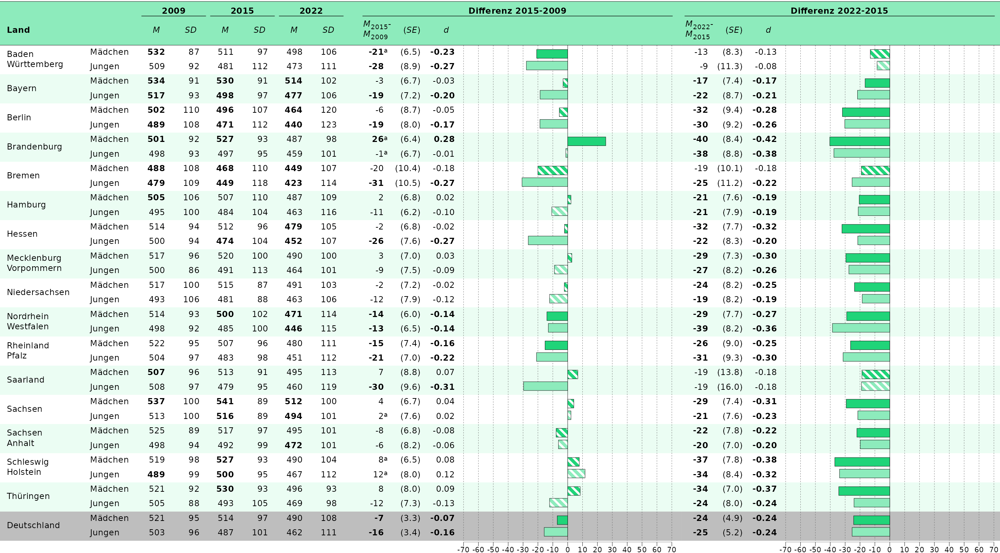

Tableplots
tableplots.RmdThis vignette shows you how to plot tableplots from
eatRep data. The workflow is optimized for
Bildungstrend-graphs, but can be expanded for plotting other
eatRep data as well.
Geschlechterkapitel
Abbildung 6.5
First we prepare the data:
Now, we only want to plot the comparison of male vs. female. The direction is always the same, we can look that up in the plain data, therefore it doesn’t matter which one we filter:
gender_prepped_sub <- subset(gender_prepped, subgroup_var == "male")
gender_prepped <- gender_prepped_sub[order(gender_prepped_sub$state_var), ]
gender_prepped$y_axis <- 1:nrow(gender_prepped)
gender_prepped$state_var <- process_bundesland(gender_prepped$state_var, linebreak = FALSE)The tables need some more work, because they need to be connected with the barplot, but only have half the rows. Therefore we need to build separate variables for each table part, with the respective rows of the domain not plotted in the table half set to empty strings. Because we want to plot both competence areas next to each other, we have to do some minor data wrangling first:
gender_prepped_lesen <- gender_prepped
gender_prepped_lesen[gender_prepped_lesen$kb == "hoeren", !colnames(gender_prepped) %in% c("y_axis", "kb")] <- NA
gender_prepped_hoeren <- gender_prepped
gender_prepped_hoeren[gender_prepped_hoeren$kb == "lesen", !colnames(gender_prepped) %in% c("y_axis", "kb")] <- NA
gender_prepped_lh <- merge(gender_prepped_lesen, gender_prepped_hoeren, by = c("y_axis", "kb"), suffixes = c("_lesen", "_hören"))
gender_prepped_lh_final <- merge(
gender_prepped_lh,
gender_prepped[, c(
"y_axis",
"est_mean_comp_groupDiff_sameFacet_femaleSubgroup_2022",
"sig_mean_comp_groupDiff_sameFacet_femaleSubgroup_2022"
)]
)
gender_prepped_lh_final <- gender_prepped_lh_final[order(gender_prepped_lh_final$y_axis), ]Now we can plot the table like usual, with one exception: I can nudge the table contents a bit downwards, so they also fill the empty row.
tableplot_6.5 <- plot_tablebarplot(
dat = gender_prepped_lh_final,
bar_est = "est_mean_comp_groupDiff_sameFacet_femaleSubgroup_2022",
bar_fill = "kb",
bar_sig = "sig_mean_comp_groupDiff_sameFacet_femaleSubgroup_2022",
columns_table = list(
"state_var_lesen",
"est_mean_comp_groupDiff_sameFacet_femaleSubgroup_2022_lesen",
"se_mean_comp_groupDiff_sameFacet_femaleSubgroup_2022_lesen",
"es_mean_comp_groupDiff_sameFacet_femaleSubgroup_2022_lesen",
"est_mean_comp_groupDiff_sameFacet_femaleSubgroup_2022_hören",
"se_mean_comp_groupDiff_sameFacet_femaleSubgroup_2022_hören",
"es_mean_comp_groupDiff_sameFacet_femaleSubgroup_2022_hören"
),
columns_table_sig_bold = list(
NULL,
"sig_mean_comp_groupDiff_sameFacet_femaleSubgroup_2022_lesen",
NULL,
"sig_mean_comp_groupDiff_sameFacet_femaleSubgroup_2022_lesen",
"sig_mean_comp_groupDiff_sameFacet_femaleSubgroup_2022_hören",
NULL,
"sig_mean_comp_groupDiff_sameFacet_femaleSubgroup_2022_hören"
),
columns_table_sig_superscript = list(
NULL,
"sig_mean_comp_crossDiff_of_groupDiff_totalFacet_femaleSubgroup_2022_lesen",
NULL,
"sig_mean_comp_crossDiff_of_groupDiff_totalFacet_femaleSubgroup_2022_lesen",
"sig_mean_comp_crossDiff_of_groupDiff_totalFacet_femaleSubgroup_2022_hören",
NULL,
"sig_mean_comp_crossDiff_of_groupDiff_totalFacet_femaleSubgroup_2022_hören"
),
columns_round = list(NULL, 0, 1, 2, 0, 1, 2),
columns_table_se = list(
NULL,
NULL,
"se_mean_comp_groupDiff_sameFacet_femaleSubgroup_2022_lesen",
NULL,
NULL,
"se_mean_comp_groupDiff_sameFacet_femaleSubgroup_2022_hören",
NULL
),
headers = list(
"**Land**",
"*M*<sub>M</sub>-*M*<sub>J</sub>",
"(*SE*)",
"*d*",
"*M*<sub>M</sub>-*M*<sub>J</sub>",
"(*SE*)",
"*d*",
"**Vorsprung zugunsten der<br>Mädchen**"
),
column_spanners = list("**Leseverstehen**" = c(2, 4), "**Hörverstehen**" = c(5, 7)),
y_axis = "y_axis",
plot_settings = plotsettings_tablebarplot(
default_list = abb_6.5
)
)Finally we can save the plot:
save_plot(tableplot_6.5, filename = "C:/Users/hafiznij/Downloads/abb6.5.pdf", width = 160, height = 90)
tableplot_6.5Abbildung 6.6
First the data has to be prepared:
gender_prepped_mean_sd <- lapply(trend_gender,
prep_tablebarplot,
subgroup_var = "Kgender",
parameter = c("mean", "sd")
)
## Let's focus on:
gender_lesen <- gender_prepped_mean_sd[[1]]Afterwards, we have to bring it in the format we want to plot it in:
gender_lesen <- subset(gender_lesen, subgroup_var %in% c("male", "female"))
## females should be the first row always:
gender_lesen <- gender_lesen[order(gender_lesen$subgroup_var), ]
gender_lesen <- gender_lesen[order(gender_lesen$state_var), ]
gender_lesen$state_var <- process_bundesland(gender_lesen$state_var, linebreak = TRUE)
## Depending on whether a column has a linebreak, they have to be nudged down. I define the according vector here already, because it might get confusing furhter down:
nudge_col1_y <- ifelse(grepl("<br>", gender_lesen$state_var), -0.25, -0.5)
gender_lesen$state_var[duplicated(gender_lesen$state_var)] <- " "
gender_lesen$subgroup_var <- gsub("^male", "Jungen", gender_lesen$subgroup_var)
gender_lesen$subgroup_var <- gsub("female", "Mädchen", gender_lesen$subgroup_var)
gender_lesen$empty <- ""We will have to plot multiple plots and combine them. To do that, we will have to set the column widths, so they are identical over the different plots:
column_widths_stand <- standardize_column_width(
column_widths = list(
p1 = c(0.085, 0.05, rep(0.035, 6), 0.015, rep(0.035, 3), NA),
p2 = c(rep(0.035, 3), NA)
),
plot_ranges = c(142, 142) # Ranges of the x-axes of both plots set in 'axis_x_lims'.
)We can just use this object in the plot-settings to adjust the column widths.
p_1 <- plot_tablebarplot(
dat = gender_lesen,
bar_est = "est_mean_comp_trend_sameFacet_sameSubgroup_2009_2015",
bar_label = NULL,
bar_sig = "sig_mean_comp_trend_sameFacet_sameSubgroup_2009_2015",
bar_fill = "subgroup_var",
column_spanners = list(
"**2009**" = c(3, 4),
"**2015**" = c(5, 6),
"**2022**" = c(7, 8),
"**Differenz 2015-2009**" = c(10, 13)
),
columns_table_se = list(NULL, NULL, NULL, NULL, NULL, NULL, NULL, NULL, NULL, NULL, "se_mean_comp_trend_sameFacet_sameSubgroup_2009_2015", NULL),
headers = list("**Land**", " ", "*M*", "*SD*", "*M*", "*SD*", "*M*", "*SD*", "", "*M*<sub>2015</sub>-<br>*M*<sub>2009</sub> ", "(*SE*)", "*d*", " "),
columns_table = c(
"state_var",
"subgroup_var",
"est_mean_comp_none_2009",
"est_sd_comp_none_2009",
"est_mean_comp_none_2015",
"est_sd_comp_none_2015",
"est_mean_comp_none_2022",
"est_sd_comp_none_2022",
"empty",
"est_mean_comp_trend_sameFacet_sameSubgroup_2009_2015",
"se_mean_comp_trend_sameFacet_sameSubgroup_2009_2015",
"es_mean_comp_trend_sameFacet_sameSubgroup_2009_2015"
),
columns_table_sig_bold = list(
NULL,
NULL,
"sig_mean_comp_crossDiff_totalFacet_sameSubgroup_2009",
NULL,
"sig_mean_comp_crossDiff_totalFacet_sameSubgroup_2015",
NULL,
"sig_mean_comp_crossDiff_totalFacet_sameSubgroup_2022",
NULL,
NULL,
"sig_mean_comp_trend_sameFacet_sameSubgroup_2009_2015",
NULL,
"sig_mean_comp_trend_sameFacet_sameSubgroup_2009_2015"
),
columns_table_sig_superscript = list(NULL, NULL, NULL, NULL, NULL, NULL, NULL, NULL, NULL, "sig_mean_comp_trend_crossDiff_totalFacet_sameSubgroup_2009_2015", NULL, NULL),
y_axis = "y_axis",
columns_round = c(rep(0, 10), 1, 2),
plot_settings = plotsettings_tablebarplot(
bar_pattern_spacing = 0.01, ## Try out what look good. For own plots, take the template ones as orientation
columns_alignment = c(0, 0, rep(2, 10)),
columns_width = column_widths_stand$p1, ## This is the column-width object we set above
columns_nudge_x = c(rep(0, 9), -1.5, 0, 0),
columns_nudge_y = c(list(nudge_col1_y), rep(list(0), 11)),
headers_alignment = c(0, 0, rep(0.5, 7), 0, 0.5, 0.5, 0),
headers_nudge_x = c(rep(0, 9), 2, rep(0, 3)),
default_list = abb_6.6
)
)
p_2 <- plot_tablebarplot(
dat = gender_lesen,
bar_est = "est_mean_comp_trend_sameFacet_sameSubgroup_2015_2022",
bar_label = NULL,
bar_sig = "sig_mean_comp_trend_sameFacet_sameSubgroup_2015_2022",
bar_fill = "subgroup_var",
column_spanners = list(
"**Differenz 2022-2015**" = c(1, 4)
),
headers = list(
"*M*<sub>2022</sub>-<br>*M*<sub>2015</sub> ",
"(*SE*)",
"*d*",
" "
),
columns_table = c(
"est_mean_comp_trend_sameFacet_sameSubgroup_2015_2022",
"se_mean_comp_trend_sameFacet_sameSubgroup_2015_2022",
"es_mean_comp_trend_sameFacet_sameSubgroup_2015_2022"
),
columns_table_se = list(NULL, "se_mean_comp_trend_sameFacet_sameSubgroup_2015_2022", NULL),
columns_table_sig_bold = list(
"sig_mean_comp_trend_sameFacet_sameSubgroup_2015_2022",
NULL,
"sig_mean_comp_trend_sameFacet_sameSubgroup_2015_2022"
),
columns_table_sig_superscript = list("sig_mean_comp_trend_crossDiff_totalFacet_sameSubgroup_2015_2022", NULL, NULL),
y_axis = "y_axis",
columns_round = c(0, 1, 2),
plot_settings = plotsettings_tablebarplot(
bar_pattern_spacing = 0.017,
columns_alignment = c(2, 2, 2),
columns_width = column_widths_stand$p2, ## This is the column-width object we set above
headers_nudge_x = c(2, 0, 0, 0),
headers_alignment = c(0, 0.5, 0.5, 0),
default_list = abb_6.6
)
)These values have to be set in the plot-settings above.
Now we can combine the plots:
tableplot_6.6 <- combine_plots(list(p_1, p_2))And save the result:
save_plot(tableplot_6.6, filename = "C:/Users/hafiznij/Downloads/abb_6.6.pdf", width = 235, height = 130)
Zuwanderungskapitel
Currently use the gender_trend data for demonstration
purposes, the subgroups are of course named differently for the actual
chapter.
gender_prepped_2 <- gender_prepped[gender_prepped$kb == "lesen", ]
gender_prepped_2$empty <- "" ## Needes as a empty space between column spanners
gender_prepped_2$state_var <- process_bundesland(gender_prepped_2$state_var, linebreak = FALSE)
column_widths_stand <- standardize_column_width(
column_widths = list(
p1 = c(0.16, rep(0.045, 5), NA),
p2 = c(0.015, 0.07, 0.045, NA),
p3 = c(0.07, 0.045, NA)
),
plot_ranges = c(60, 60, 65) # Range of the x-axes of both plots set in 'axis_x_lims'.
)
p_1 <- plot_tablebarplot(
dat = gender_prepped_2,
bar_est = "est_mean_comp_groupDiff_sameFacet_femaleSubgroup_2022",
bar_sig = "sig_mean_comp_groupDiff_sameFacet_femaleSubgroup_2022",
column_spanners = list(
"**2009**" = c(2),
"**2015**" = c(3),
"**2022**" = c(4, 7)
),
column_spanners_2 = list(
"**Differenz Schüler:innen mit - Schüler:innen ohne <br> Zuwanderungshintergrund**" = c(2, 7)
),
columns_table_se = list(NULL, NULL, NULL, NULL, "se_mean_comp_groupDiff_sameFacet_femaleSubgroup_2022", NULL),
headers = list(
"bold(Land)",
"Delta * italic(M)",
"Delta * italic(M)",
"Delta * italic(M)",
"(italic(SE))",
"italic(d)",
" "
),
columns_table = c(
"state_var",
"est_mean_comp_groupDiff_sameFacet_femaleSubgroup_2009",
"est_mean_comp_groupDiff_sameFacet_femaleSubgroup_2015",
"est_mean_comp_groupDiff_sameFacet_femaleSubgroup_2022",
"se_mean_comp_groupDiff_sameFacet_femaleSubgroup_2022",
"es_mean_comp_groupDiff_sameFacet_femaleSubgroup_2022"
),
columns_table_sig_bold = list(
NULL,
"sig_mean_comp_groupDiff_sameFacet_femaleSubgroup_2009",
"sig_mean_comp_groupDiff_sameFacet_femaleSubgroup_2015",
"sig_mean_comp_groupDiff_sameFacet_femaleSubgroup_2022",
NULL,
"sig_mean_comp_groupDiff_sameFacet_femaleSubgroup_2022"
),
columns_round = c(rep(0, 4), 1, 2),
y_axis = "y_axis",
plot_settings = plotsettings_tablebarplot(
bar_pattern_spacing = 0.0274,
columns_alignment = c(0, 0.5, 0.5, 0.5, 0.5, 0.5),
columns_width = column_widths_stand$p1,
default_list = abb_8.4
)
)
p_2 <- plot_tablebarplot(
dat = gender_prepped_2,
bar_est = "est_mean_comp_trend_groupDiff_sameFacet_femaleSubgroup_2009_2015",
bar_sig = "sig_mean_comp_trend_groupDiff_sameFacet_femaleSubgroup_2009_2015",
column_spanners = list(
"**2015-2009**" = c(2, 4)
),
column_spanners_2 = list(
"**Veränderung der Differenz<br>**" = c(2, 4)
),
columns_table_se = list(NULL, NULL, "se_mean_comp_trend_groupDiff_sameFacet_femaleSubgroup_2009_2015"),
headers = list(
" ",
list(
"paste(Delta * italic(M[2015]), '-')",
"Delta * italic(M[2009])"
),
"(italic(SE))",
" "
),
columns_table = c(
"empty",
"est_mean_comp_trend_groupDiff_sameFacet_femaleSubgroup_2009_2015",
"se_mean_comp_trend_groupDiff_sameFacet_femaleSubgroup_2009_2015"
),
columns_table_sig_bold = list(
NULL, "sig_mean_comp_trend_groupDiff_sameFacet_femaleSubgroup_2009_2015", NULL
),
columns_round = c(0, 0, 1),
y_axis = "y_axis",
plot_settings =
plotsettings_tablebarplot(
bar_pattern_spacing = 0.0334,
columns_alignment = c(2, 2, 2),
headers_alignment = c(0, 0, 0.5, 0),
headers_nudge_x = c(0, 10, -2, 0),
columns_width = column_widths_stand$p2,
default_list = abb_8.4
)
)
p_3 <- plot_tablebarplot(
dat = gender_prepped_2,
bar_est = "est_mean_comp_trend_groupDiff_sameFacet_femaleSubgroup_2015_2022",
bar_sig = "sig_mean_comp_trend_groupDiff_sameFacet_femaleSubgroup_2015_2022",
column_spanners = list(
"**2022-2015**" = c(1, 3)
),
column_spanners_2 = list(
"**Veränderung der Differenz<br>**" = c(1, 3)
),
columns_table_se = list(NULL, "se_mean_comp_trend_groupDiff_sameFacet_femaleSubgroup_2015_2022"),
headers = list(
list(
"paste(Delta * italic(M[2022]), '-')",
"Delta * italic(M[2015])"
),
"(italic(SE))",
" "
),
columns_table = c(
"est_mean_comp_trend_groupDiff_sameFacet_femaleSubgroup_2015_2022",
"se_mean_comp_trend_groupDiff_sameFacet_femaleSubgroup_2015_2022"
),
columns_table_sig_bold = list(
"sig_mean_comp_trend_groupDiff_sameFacet_femaleSubgroup_2015_2022", NULL
),
columns_round = c(0, 1),
y_axis = "y_axis",
plot_settings = plotsettings_tablebarplot(
bar_pattern_spacing = 0.0392,
axis_x_lims = c(-20, 45),
columns_alignment = c(2, 2),
headers_alignment = c(0, 0.5, 0),
headers_nudge_x = c(10, -3, 0),
columns_width = column_widths_stand$p3,
default_list = abb_8.4
)
)
tableplot_8.4 <- combine_plots(list(p_1, p_2, p_3))
save_plot(tableplot_8.4,
filename = "C:/Users/hafiznij/Downloads/abb_8.4.pdf",
width = 160, height = 100
)
tableplot_8.4Stacked Barplot (Abbildung 9.1)
The data preperation for the stacked barplots is a bit more
complicated. Most likely, we will have to run at least to analyses with
eatRep, one for the percentages, and one for the means. We
prepare both analyses seperately and then merge them:
dat_prepped <- prep_tablebarplot(anteile,
subgroup_var = "Kgender",
parameter = NULL,
parameter_to_colname = FALSE
) ## This is important, because our parameter column contains the levels of the dependent Variable. They need to stay in the long format for this one!
dat_prepped_means <- prep_tablebarplot(means,
subgroup_var = "Kgender",
parameter = c("mean", "sd"),
parameter_to_colname = TRUE
) ## Here we don't need the long format for the parameters, so we pivot them wider and create parameter specific columns for each comparison!Now I have to do some extra data prep so the data looks as whished:
## Recode subgroup columns
dat_prepped$subgroup_var <- gsub("weiblich", "Mädchen", dat_prepped$subgroup_var)
dat_prepped$subgroup_var <- gsub("maennlich", "Jungen", dat_prepped$subgroup_var)
dat_prepped$subgroup_var <- gsub("total", "Gesamt", dat_prepped$subgroup_var)
## Don't Plot Ncases
dat_prepped <- subset(dat_prepped, parameter != "Ncases")
## Make parameter an ordered factor to steer the order of the stacked bars
dat_prepped$parameter <- factor(dat_prepped$parameter, levels = c("niedrig", "mittel", "hoch"), ordered = TRUE)
## Sort data
dat_prepped <- dat_prepped[order(dat_prepped$subgroup_var), ]
## Build bar labels
dat_prepped$label <- paste0(round(dat_prepped$est_NA_comp_none * 100, 0), "%")
## Only plot results for the whole of germany
dat_prepped <- dat_prepped[dat_prepped$state_var == "total", ]
## Multiply with 100 to show the perercentages
dat_prepped$est_NA_comp_none <- dat_prepped$est_NA_comp_none * 100This next part is only necessary because my example data does not
contain enough subgroups and dependent variable for the actual plot, so
I copy paste them onto the data. You can ignore the next chunk. However,
if you have multiple eatRep-datasets with different
dependent variables, you might need to rbind() them
together to put them together into one plot. I do the same here with my
copied data.
Show Code
## Add additonal subgroups to the data:
dat_prepped_other_groups <- subset(dat_prepped[-1, ], subgroup_var != "Gesamt")
dat_prepped_other_groups$subgroup_var <- gsub("Jungen", "maximal 100 Bücher", dat_prepped_other_groups$subgroup_var)
dat_prepped_other_groups$subgroup_var <- gsub("Mädchen", "mehr als 100 Bücher", dat_prepped_other_groups$subgroup_var)
dat_prepped_other_groups2 <- subset(dat_prepped[-1, ], subgroup_var != "Gesamt")
dat_prepped_other_groups2$subgroup_var <- gsub("Jungen", "mit Zuwanderungshintergrund", dat_prepped_other_groups2$subgroup_var)
dat_prepped_other_groups2$subgroup_var <- gsub("Mädchen", "ohne Zuwanderungshintergrund", dat_prepped_other_groups2$subgroup_var)
## Because the subgroups are also written into the colnames, I manually rename the columns.
## Not needed if you actually have different groups in your data.
colnames(dat_prepped_other_groups) <- gsub("maennlich", "max100books", colnames(dat_prepped_other_groups))
colnames(dat_prepped_other_groups) <- gsub("weiblich", "more100books", colnames(dat_prepped_other_groups))
colnames(dat_prepped_other_groups2) <- gsub("maennlich", "ZWH", colnames(dat_prepped_other_groups2))
colnames(dat_prepped_other_groups2) <- gsub("weiblich", "noZWH", colnames(dat_prepped_other_groups2))
dat_prepped_3 <- dplyr::bind_rows(dat_prepped, dat_prepped_other_groups, dat_prepped_other_groups2)
## Sort data. Make subgroup_var into an ordered Factor for that
dat_prepped_3$subgroup_var <- factor(dat_prepped_3$subgroup_var, levels = c("Gesamt", "Mädchen", "Jungen", "mehr als 100 Bücher", "maximal 100 Bücher", "mit Zuwanderungshintergrund", "ohne Zuwanderungshintergrund"), ordered = TRUE)
dat_prepped_3 <- dat_prepped_3[order(dat_prepped_3$subgroup_var), ]
## Fill in the subheader into that empty row. Set to NA for all but the first!
## Add an empty row on top
na_row <- as.data.frame(matrix(NA, nrow = 1, ncol = ncol(dat_prepped_3)))
colnames(na_row) <- colnames(dat_prepped_3)
dat_prepped_3 <- rbind(na_row, dat_prepped_3)
dat_prepped_3$var <- NA
dat_prepped_3[1, "var"] <- "**Allgemeine Schulzufriedenheit**"
## Also add values for the y-axis. In tis case it is important that all values, that should be plotted into one row also receive the same values:
dat_prepped_3$y_axis <- c(8, rep(1, 3), rep(2, 3), rep(3, 3), rep(4, 3), rep(5, 3), rep(6, 3), rep(7, 3))
## Now I can copy this data to simulate other dependent variables
dat_var2 <- dat_prepped_3
dat_var2[1, "var"] <- "**Soziale Eingebundenheit**"
dat_var2$depVar <- "sozEingeb"
dat_var2$y_axis <- c(16, rep(9, 3), rep(10, 3), rep(11, 3), rep(12, 3), rep(13, 3), rep(14, 3), rep(15, 3))
dat_var3 <- dat_var2
dat_var3[1, "var"] <- "**Emotionale Probleme**"
dat_var3$depVar <- "emoProb"
dat_var3$y_axis <- c(24, rep(17, 3), rep(18, 3), rep(19, 3), rep(20, 3), rep(21, 3), rep(22, 3), rep(23, 3))
dat_var4 <- dat_var3
dat_var4[1, "var"] <- "**Hyperaktivität**"
dat_var4$depVar <- "hyperAkt"
dat_var4$y_axis <- c(32, rep(25, 3), rep(26, 3), rep(27, 3), rep(28, 3), rep(29, 3), rep(30, 3), rep(31, 3))
dat <- rbind(dat_prepped_3, dat_var2, dat_var3, dat_var4)Now we can plot the stacked bars:
## Nudging all the rows into the correct position is a bit more complicated here, so I define a vector for it that can be used multiple times:
nudge_rows <- rep(c(0, rep(0, 3), rep(-0.125, 3), rep(0.125, 3), rep(-0.125, 3), rep(0.125, 3), rep(-0.125, 3), rep(0.125, 3)), 4)
p_stacked <- plot_tablebarplot(dat,
bar_est = "est_NA_comp_none",
bar_label = "label",
bar_fill = "parameter",
columns_table = c("var", "subgroup_var"),
headers = c("**Merkmal**", "", ""),
y_axis = "y_axis",
plot_settings = plotsettings_tablebarplot(
bar_fill_colour = c("niedrig" = "#20D479", "mittel" = "#8DEBBC", "hoch" = "#EBFDF3"),
bar_label_colour = c("niedrig" = "white", "mittel" = "black", "hoch" = "black"),
columns_alignment = c(0, 0),
columns_width = c(0.025, 0.3, 0.675),
bar_label_nudge_x = rep(0.5, nrow(dat)),
bar_label_nudge_y = nudge_rows,
bar_nudge_y = nudge_rows,
columns_nudge_y = c(list(0), list(nudge_rows)),
default_list = abb_9.1
)
)Now we can prepare the second part of the plot, showing the means. We use the prepped means from the separate analysis.
## It is important that the resulting table has the same number of rows as the stacked one.
## First, filter and recode the data as needed
dat_prepped_means <- subset(dat_prepped_means, state_var == "total")
dat_prepped_means$subgroup_var <- gsub("weiblich", "Mädchen", dat_prepped_means$subgroup_var)
dat_prepped_means$subgroup_var <- gsub("maennlich", "Jungen", dat_prepped_means$subgroup_var)
dat_prepped_means$subgroup_var <- gsub("total", "Gesamt", dat_prepped_means$subgroup_var)
dat_prepped_means$subgroup_var <- factor(dat_prepped_means$subgroup_var, levels = c("Gesamt", "Mädchen", "Jungen"), ordered = TRUE)Again I need to prepare the data for the example plot. You can ignore the next chunk.
Show Code
## Again, copy the data to simulate other subgroups, that were not actually in the data!
dat_table_2 <- subset(dat_prepped_means, subgroup_var != "Gesamt")
dat_table_2$subgroup_var <- gsub("Jungen", "mit Zuwanderungshintergrund", dat_table_2$subgroup_var)
dat_table_2$subgroup_var <- gsub("Mädchen", "ohne Zuwanderungshintergrund", dat_table_2$subgroup_var)
dat_table_3 <- subset(dat_prepped_means, subgroup_var != "Gesamt")
dat_table_3$subgroup_var <- gsub("Jungen", "maximal 100 Bücher", dat_table_3$subgroup_var)
dat_table_3$subgroup_var <- gsub("Mädchen", "mehr als 100 Bücher", dat_table_3$subgroup_var)
## Because the subgroups are also written into the colnames, I manually rename the columns.
## Not needed if you actually have different groups in your data.
dat_table_2$est_mean_comp_groupDiff_sameFacet_more100booksSubgroup_NA## NULL
colnames(dat_table_2) <- gsub("maennlich", "max100books", colnames(dat_table_2))
colnames(dat_table_2) <- gsub("weiblich", "more100books", colnames(dat_table_2))
## Manually give them other values, not needed if you have actually different groups
dat_table_2$est_mean_comp_groupDiff_sameFacet_more100booksSubgroup_NA <- ifelse(!is.na(dat_table_2$est_mean_comp_groupDiff_sameFacet_more100booksSubgroup_NA), -0.201, NA)
dat_table_2$se_mean_comp_groupDiff_sameFacet_more100booksSubgroup_NA <- ifelse(!is.na(dat_table_2$se_mean_comp_groupDiff_sameFacet_more100booksSubgroup_NA), 0.02, NA)
dat_table_2$es_mean_comp_groupDiff_sameFacet_more100booksSubgroup_NA <- ifelse(!is.na(dat_table_2$es_mean_comp_groupDiff_sameFacet_more100booksSubgroup_NA), -0.25, NA)
dat_table_2$est_mean_comp_groupDiff_sameFacet_max100booksSubgroup_NA <- ifelse(!is.na(dat_table_2$est_mean_comp_groupDiff_sameFacet_max100booksSubgroup_NA), -0.201, NA)
dat_table_2$se_mean_comp_groupDiff_sameFacet_max100booksSubgroup_NA <- ifelse(!is.na(dat_table_2$se_mean_comp_groupDiff_sameFacet_max100booksSubgroup_NA), 0.02, NA)
dat_table_2$es_mean_comp_groupDiff_sameFacet_max100booksSubgroup_NA <- ifelse(!is.na(dat_table_2$es_mean_comp_groupDiff_sameFacet_max100booksSubgroup_NA), -0.25, NA)
## Same for the other two subgroups
colnames(dat_table_3) <- gsub("maennlich", "ZWH", colnames(dat_table_3))
colnames(dat_table_3) <- gsub("weiblich", "noZWH", colnames(dat_table_3))
dat_table_3$est_mean_comp_groupDiff_sameFacet_noZWHSubgroup_NA <- ifelse(!is.na(dat_table_3$est_mean_comp_groupDiff_sameFacet_noZWHSubgroup_NA), -0.523, NA)
dat_table_3$se_mean_comp_groupDiff_sameFacet_noZWHSubgroup_NA <- ifelse(!is.na(dat_table_3$se_mean_comp_groupDiff_sameFacet_noZWHSubgroup_NA), 0.03, NA)
dat_table_3$es_mean_comp_groupDiff_sameFacet_noZWHSubgroup_NA <- ifelse(!is.na(dat_table_3$es_mean_comp_groupDiff_sameFacet_noZWHSubgroup_NA), -0.256, NA)
dat_table_3$est_mean_comp_groupDiff_sameFacet_ZWHSubgroup_NA <- ifelse(!is.na(dat_table_3$est_mean_comp_groupDiff_sameFacet_ZWHSubgroup_NA), -0.523, NA)
dat_table_3$se_mean_comp_groupDiff_sameFacet_ZWHSubgroup_NA <- ifelse(!is.na(dat_table_3$se_mean_comp_groupDiff_sameFacet_ZWHSubgroup_NA), 0.03, NA)
dat_table_3$es_mean_comp_groupDiff_sameFacet_ZWHSubgroup_NA <- ifelse(!is.na(dat_table_3$es_mean_comp_groupDiff_sameFacet_ZWHSubgroup_NA), -0.256, NA)
dat2 <- dplyr::bind_rows(dat_prepped_means, dat_table_2, dat_table_3)
## Recode the dependent variable to have the same name as in the other data set. Needed for merging.
dat2$depVar <- "Sfskde_kurz_imp_kat"
## I copy the data now to simulate the other dependent variables.
dat2_var2 <- dat2
dat2_var2$depVar <- "sozEingeb"
dat2_var3 <- dat2_var2
dat2_var3$depVar <- "emoProb"
dat2_var4 <- dat2
dat2_var4$depVar <- "hyperAkt"
dat_means <- rbind(dat2, dat2_var2, dat2_var3, dat2_var4)Now that I can merge my mean data with the data I used for the stacked bars. This ensures that every row receives the correct values. First, I have to merge together the groupDiff columns, so I can plot them within the same column in the table. This is important for displaying the correct values in the table:
## The significances and estimates I want to plot are distributed over multiple columns, because they were group-Diffs.
## I therefore have to pull them together into the same column :
dat_means$est_groupDiff <- merge_cols(dat_means, "est", "groupDiff")
dat_means$sig_groupDiff <- merge_cols(dat_means, "sig", "groupDiff")
dat_means$es_groupDiff <- merge_cols(dat_means, "es", "groupDiff")
dat_means$se_groupDiff <- merge_cols(dat_means, "se", "groupDiff")Afterwards I can merge the means with the data I used for the stacked bars, so the rows are aligned in the table:
## Now we can merge the data with the data that we used in the stacked barplot.
## By doing this, we can guarantee easily that the position of the values matches the correct rows in the stacked barplot.
## Using left_join to preserve the order! BaseR merge doesn't deal with the NAs in the best way here.
dat_table <- dat |>
dplyr::left_join(dat_means[, c("depVar", "subgroup_var", "state_var", "est_mean_comp_none_NA", "est_sd_comp_none_NA", "est_groupDiff", "se_groupDiff", "es_groupDiff", "sig_groupDiff")])## Joining with `by = join_by(depVar, subgroup_var, state_var)`
## Now we can reduce the data set, because we can be sure every row receives a value, due to the y-axis column!
dat_table_u <- unique(dat_table[, c("depVar", "subgroup_var", "state_var", "est_mean_comp_none_NA", "est_sd_comp_none_NA", "est_groupDiff", "se_groupDiff", "es_groupDiff", "sig_groupDiff", "y_axis")])
library(dplyr)##
## Attaching package: 'dplyr'
##
## The following objects are masked from 'package:stats':
##
## filter, lag
##
## The following objects are masked from 'package:base':
##
## intersect, setdiff, setequal, union
dat_table_u <- dat_table_u %>%
dplyr::group_by(depVar) %>%
dplyr::mutate(dplyr::across(dplyr::contains("groupDiff"), ~ ifelse(duplicated(.), NA, .))) %>%
dplyr::ungroup()Now that we have our data in the correct format, we can plot the means:
nudge_rows_short <- rep(c(0, 0, -0.125, 0.125, -0.125, 0.125, -0.125, 0.125), 4)
p_table <- plot_tablebarplot(
dat_table_u,
columns_table = c("est_mean_comp_none_NA", "est_sd_comp_none_NA", "est_groupDiff", "se_groupDiff", "es_groupDiff"),
headers = c("bolditalic(M)", "bolditalic(SD)", "Delta * bolditalic(M)", "bolditalic((SE))", "bolditalic(d)"),
columns_round = c(2, 2, 2, 2, 2),
columns_table_se = list(NULL, NULL, NULL, "se_groupDiff", NULL),
y_axis = "y_axis",
columns_table_sig_bold = list(NULL, NULL, "sig_groupDiff", NULL, "sig_groupDiff"),
plot_settings = plotsettings_tablebarplot(
columns_alignment = c(0.5, 0.5, 0.5, 0.5, 0.5),
columns_width = rep(0.2, 5),
columns_nudge_y = c(list(nudge_rows_short), list(nudge_rows_short), list(-0.5), list(-0.5), list(-0.5)),
headers_ggtext = FALSE,
default_list = abb_9.1
)
)
p_stacked_combined <- combine_plots(list(p_stacked, p_table), plot_widths = c(0.75, 0.25))## Warning: Careful! You have provided plot_widths. Please be beware that the
## x-axes might be distorted, if your plot_widths don't account for different
## x-axis ranges.
save_plot(p_stacked_combined, "C:/Users/hafiznij/Downloads/stacked.pdf", height = 140, width = 160)
p_stacked_combined## Warning: Removed 56 rows containing missing values or values outside the scale range
## (`geom_tile()`).## Warning: Removed 4 rows containing missing values or values outside the scale range
## (`geom_rect()`).## Warning: Removed 4 rows containing missing values or values outside the scale range
## (`geom_rich_text()`).## Warning: Removed 56 rows containing missing values or values outside the scale range
## (`geom_rich_text()`).
## Removed 56 rows containing missing values or values outside the scale range
## (`geom_rich_text()`).